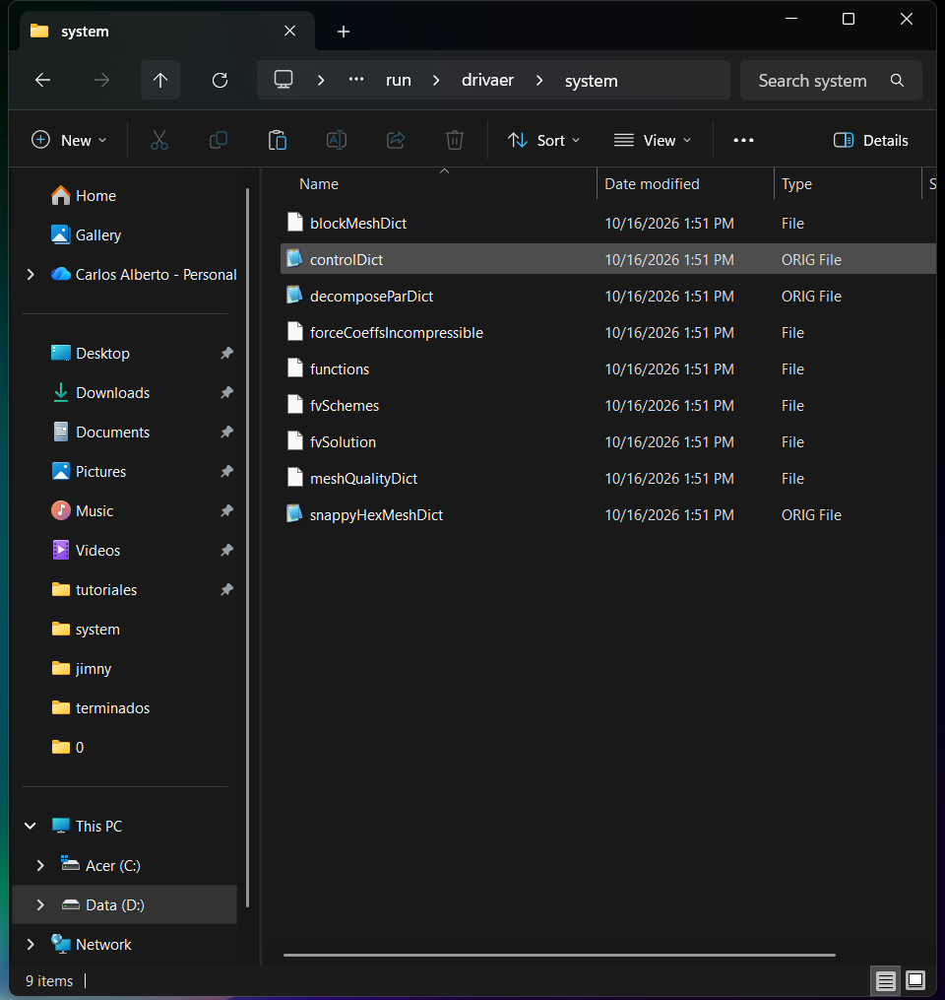
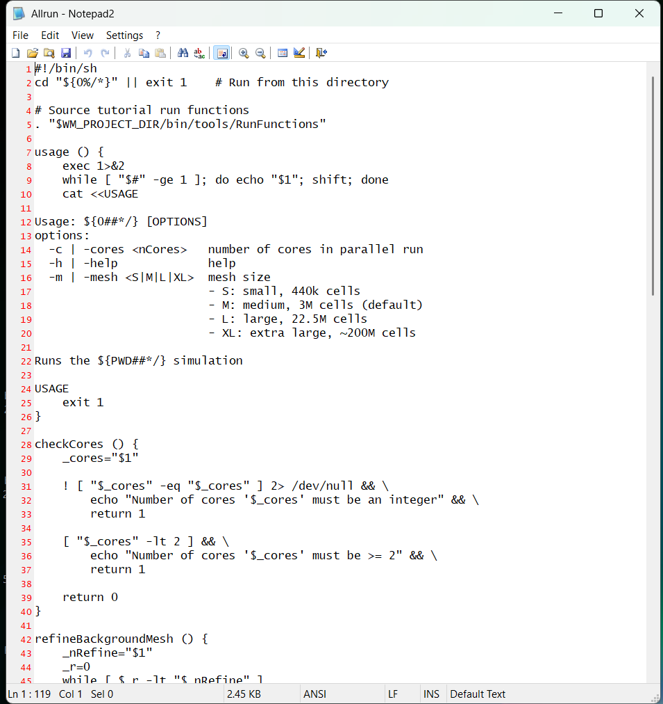
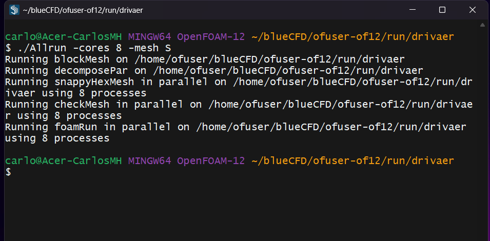
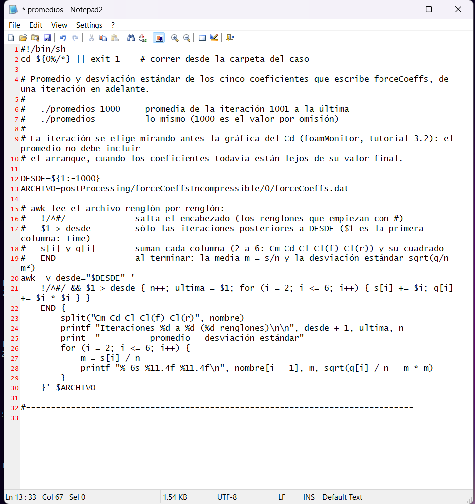
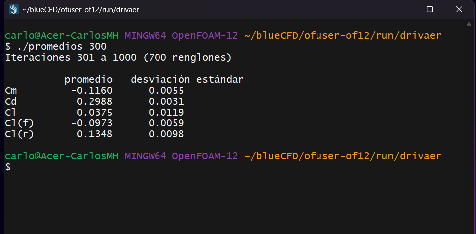
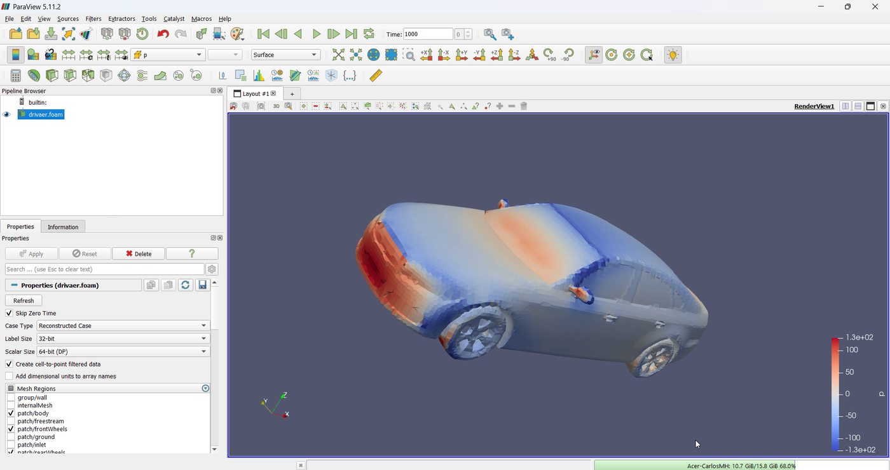
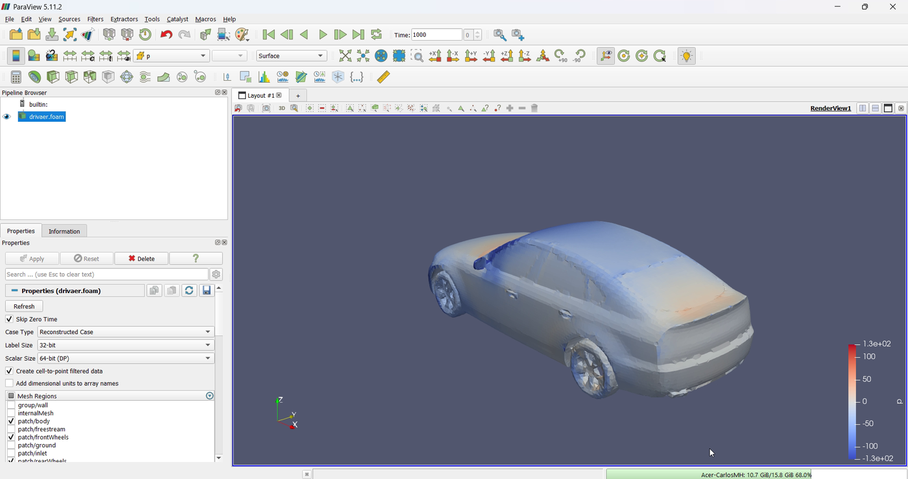

The DrivAer: validating the method against the wind tunnel
The Jimny has no published drag coefficient, but the DrivAer does: a research car measured in a wind tunnel, with its own OpenFOAM tutorial. Running it with the same method as the Jimny says how far the calculation lands from the measurement, and how much the mesh matters.
OpenFOAM · Flujo incompresible · Tutorial 3.5
El DrivAer: validar el método contra el túnel de viento
El Jimny no tiene un coeficiente de arrastre publicado; el DrivAer sí: un auto de investigación medido en túnel de viento, que trae su propio tutorial de OpenFOAM. Correrlo con el mismo método del Jimny dice qué tan lejos queda el cálculo de la medición, y cuánto pesa la malla.
OpenFOAM · Inkompressible Strömung · Tutorial 3.5
Der DrivAer: die Methode am Windkanal validieren
Für den Jimny gibt es keinen veröffentlichten Widerstandsbeiwert, für den DrivAer schon: ein im Windkanal vermessenes Forschungsfahrzeug mit eigenem OpenFOAM-Tutorial. Mit derselben Methode wie der Jimny gerechnet, zeigt es, wie weit die Rechnung von der Messung liegt und wie viel das Netz ausmacht.
Estimated reading: 40 min (plus 12 min of computing)Lectura estimada: 40 min (y 12 min de cálculo)Lesedauer: ca. 40 min (dazu 12 min Rechenzeit)Level: undergraduateNivel: licenciaturaNiveau: BachelorVerified on OpenFOAM 12 (blueCFD-Core 2024) and ParaView 5.11.2Verificado en OpenFOAM 12 (blueCFD-Core 2024) y ParaView 5.11.2Geprüft mit OpenFOAM 12 (blueCFD-Core 2024) und ParaView 5.11.2
Full English translation in preparation. Each section below carries a summary of its content; the complete text, figures and tables are available in the Spanish version, which the ES button above selects.
Run an official OpenFOAM tutorial unchanged, read its Allrun and its .orig files, and use it to validate the method of the Jimny: compare a drag coefficient with a measurement and explain the difference.
The problem
A car that was measured
The DrivAer fastback (TU München) was measured in a wind tunnel: Cd = 0.243 to 0.247 for the configuration of the tutorial. How close does the method of the Jimny get?
The theory
Validation, similarity and the tutorial's meshes
Verification and validation; Reynolds similarity and blockage; the four meshes of the Allrun (S, M, L, XL) and how refineMesh builds them; why OpenFOAM reads controlDict.orig when controlDict does not exist.
Step by step
The tutorial as it comes
cp the tutorial; ./Allrun -cores 8 -mesh S (12 min); read log.checkMesh; bring the promedios script of the Jimny and change its file name by hand; reconstructPar -latestTime and ParaView.
The case
The DrivAer next to the Jimny
The DrivAer and the Jimny side by side: the same tunnel, ground, wheels, turbulence model and numerical method; the snappyHexMesh recipes compared line by line.
Worked example
Calculation against wind tunnel
The S mesh (440 139 cells) gives Cd = 0.299, 21 to 23 % above the tunnel; the Jimny's recipe on the same car (2 076 004 cells) gives 0.276, 12 to 14 % above. The method overestimates the drag, less with the finer mesh.
Common errors
What goes wrong with a tutorial's Allrun
A lower-case mesh option; running the Allrun again on a finished case (it skips every step); opening the case in ParaView without reconstructPar (only the background mesh, at time 0).
Suggested exercise
The M mesh
Run the M mesh and see whether the drag coefficient gets closer to the tunnel.
Sources
References
Heft, Indinger and Adams (2012) for the DrivAer; the drivaerFastback tutorial of OpenFOAM 12; Hucho; Roache on verification and validation.
Objetivos de aprendizaje
Qué se debe poder hacer al terminar
Los tutoriales 3.1 a 3.4 dieron el coeficiente de arrastre del Jimny, \(C_D\) = 0.564, y lo hicieron visible. Pero el Jimny nunca se midió en un túnel de viento —o al menos no hay una medición publicada—, así que ese número no se puede comparar con nada. Esta guía hace lo que se hace en ingeniería en ese caso: correr el mismo método sobre un vehículo que sí se midió, el DrivAer, y ver qué tan lejos queda.
Distinguir verificar un cálculo de validarlo, y explicar qué dice —y qué no dice— una comparación con un experimento.
Correr un tutorial de OpenFOAM tal como viene: copiarlo, leer su Allrun y sus archivos .orig, y elegir el tamaño de su malla.
Comparar la receta de malla del tutorial con la del Jimny, línea por línea.
Calcular el \(C_D\) con el guion promedios del Jimny, adaptado, y su diferencia con el túnel de viento.
Qué hace falta. blueCFD-Core 2024 (OpenFOAM 12), una computadora de 8 núcleos y 16 GB (la malla S tarda 12 min) y el caso del Jimny en $FOAM_RUN/jimny, del que se copia el guion promedios del 3.3. El DrivAer no se descarga: viene con OpenFOAM.
El problema
Un auto que sí se midió
El DrivAer es un auto de investigación de la Universidad Técnica de Múnich (Heft, Indinger y Adams, 2012): la mezcla de dos sedanes alemanes de tamaño medio, con piezas intercambiables —tres colas, bajos lisos o detallados, con espejos o sin ellos— y un modelo a escala 1:2.5 que se midió en un túnel de viento. Su geometría es pública, y por eso es el auto de prueba de la aerodinámica de vehículos: un método nuevo se corre primero en el DrivAer.
OpenFOAM 12 lo trae como tutorial: incompressibleFluid/drivaerFastback, la cola en caída suave (fastback), con bajos lisos, espejos y ruedas que giran sobre un suelo que se mueve. Es casi el mismo planteamiento del Jimny (tabla 1): el Jimny se armó, en el 3.1, a partir de él.
DrivAer (fastback)
Jimny
Largo × ancho × alto
4.61 × 2.03 × 1.42 m
3.64 × 1.72 × 1.73 m
Área frontal \(A\)
2.154 m²
2.435 m²
Velocidad
16 m/s (el Reynolds del modelo medido)
27.78 m/s (100 km/h)
Reynolds con el largo
4.9·106
6.7·106
Bloqueo
2.7 %
3.0 %
Suelo y ruedas
suelo móvil, ruedas que giran
lo mismo
Modelo
k-ω SST, funciones de pared
lo mismo
\(C_D\) medido
0.243 a 0.247 (túnel de viento)
no publicado
Tabla 1.El DrivAer y el Jimny. Las medidas del DrivAer son las de su superficie en la malla (ParaView); las del Jimny, las del tutorial 3.1. El bloqueo es el área frontal entre la sección del túnel virtual, de 10 × 8 m en los dos casos.
La pregunta de esta guía: con el método del Jimny, ¿cuánto se equivoca el \(C_D\) del DrivAer? Si el error es chico, hay razones para confiar en el 0.564 del Jimny; si es grande, al menos se sabe en qué dirección y de qué tamaño.
Para qué sirve el DrivAer en esta serie. No es para comparar autos: el \(C_D\) del DrivAer y el del Jimny no se comparan entre sí, porque son formas distintas y cada una tiene el suyo. El DrivAer es la pieza patrón con la que se pone a prueba el método, como se revisa un instrumento con una pieza de medida conocida antes de medir algo desconocido: se le aplica lo mismo que al Jimny y, como su \(C_D\) sí se midió en un túnel de viento, se puede ver cuánto se equivoca el método y en qué dirección. Lo que se aprende es un indicio para el Jimny, no una corrección: el error del DrivAer no se le puede restar al Jimny.
La teoría
Validación, semejanza y las mallas del tutorial
Verificar y validar
Son dos preguntas distintas (Roache, 1998). Verificar es preguntar si las ecuaciones se resolvieron bien: si la malla es suficiente, si el cálculo convergió, si el programa no tiene errores. Validar es preguntar si se resolvieron las ecuaciones correctas: si el modelo de turbulencia, las condiciones de frontera y la geometría representan el experimento. Lo primero se responde con el propio cálculo (mallas más finas, más iteraciones); lo segundo, sólo contra una medición.
La comparación se resume en la diferencia relativa con el experimento:
Un \(\varepsilon\) pequeño no prueba que el método sea bueno —los errores de la malla y del modelo pueden cancelarse—, y uno grande no dice cuál de los dos falla. Por eso conviene correr más de una malla: si \(\varepsilon\) cambia mucho al refinar, el cálculo no está verificado todavía, y la comparación con el túnel dice poco del modelo.
La semejanza: por qué 16 m/s
El modelo del túnel medía 1.85 m, a escala 1:2.5, y se midió a 40 m/s. El tutorial usa el auto de tamaño real, \(L\) = 4.613 m, y para que el flujo sea semejante le pone la velocidad que da el mismo número de Reynolds:
el mismo que el del modelo: \(40 \times 1.85 / 1.5\times 10^{-5}\). Con números de Reynolds iguales y la misma forma, los coeficientes son iguales: el \(C_D\) del modelo del túnel es el del auto real a 16 m/s. Lo que no se reproduce igual es el bloqueo, la parte de la sección del túnel que tapa el auto: en el túnel virtual de 10 × 8 m es 2.7 %, poco, y en el túnel real se corrige en la medición.
Los archivos .orig
Un tutorial con varias opciones necesita cambiar sus diccionarios según la opción, sin perder los originales. La solución de OpenFOAM es la extensión .orig (figura 1): cuando un programa busca system/controlDict y no lo encuentra, lee system/controlDict.orig. El Allrun cambia una entrada con foamDictionary -set, que lee el .orig y escribe el archivo sin extensión, con el cambio; el .orig queda intacto, y Allclean borra los archivos sin extensión para volver al principio.

Figura 1.La carpeta system del tutorial, recién copiada. Tres archivos tienen la extensión .orig (el Explorador los muestra como ORIG File): controlDict, decomposeParDict y snappyHexMeshDict. Son los que el Allrun modifica según las opciones con que se llame.
Las cuatro mallas
La malla de fondo del DrivAer, la de blockMeshDict, son cubos de 1 m: 40 × 10 × 8 = 3200 celdas. La opción -mesh del Allrun decide cuántas veces se parte esa malla en ocho con refineMesh antes de snappyHexMesh (tabla 2). Como los niveles de snappyHexMeshDict son relativos a la malla de fondo, cada refinamiento parte también a la mitad las celdas junto al auto, y multiplica el total por unas siete u ocho.
Opción
Celdas
Refinamientos de la malla de fondo
Celda en la carrocería
-mesh S
440 mil
0
3.1 cm (nivel 5 sobre cubos de 1 m)
-mesh M (por omisión)
3 millones
1
1.6 cm
-mesh L
22.5 millones
2
0.8 cm
-mesh XL
unos 200 millones
3
0.4 cm
Tabla 2.Las cuatro mallas del Allrun. Las cifras de celdas son las que da el propio Allrun (./Allrun -help). Cada nivel parte la malla de fondo en ocho con refineMesh antes de snappyHexMesh: las celdas del auto se hacen la mitad. La S tarda 12 min en la laptop de 8 núcleos.
La S es la única que cabe en una sesión de clase. La M, la que el tutorial usa si no se le dice otra cosa, tardaría del orden de una hora y media en una computadora como la de esta guía (una estimación); la L y la XL son para un clúster.
Paso a paso
El tutorial tal como viene
En la terminal de blueCFD-Core:
Copiar el tutorial: cp -r $FOAM_TUTORIALS/incompressibleFluid/drivaerFastback $FOAM_RUN/drivaer y cd $FOAM_RUN/drivaer. El caso tiene 0, constant, system, Allrun y Allclean; en system, tres archivos .orig.
Leer el caso en Notepad2: Allrun (figura 2), 0/U (16 m/s, y las ruedas que giran a \(U/r\)), system/snappyHexMeshDict.orig y system/forceCoeffsIncompressible (el área de referencia, 2.154 m²).
Correr: ./Allrun -cores 8 -mesh S. El guion escribe una línea por paso —blockMesh, decomposePar, snappyHexMesh, checkMesh y foamRun— y su salida va a un log con el nombre del programa (figura 3). La malla tarda 1 min y las 1000 iteraciones, 11.
Revisar la malla: abrir log.checkMesh y leer el final.
El \(C_D\): cp ../jimny/promedios .; abrir promedios y cambiar la línea del archivo (figura 4) por
y luego ./promedios 300: promedia de la iteración 301 a la 1000.
Verlo: reconstructPar -latestTime | tee log.reconstructPar (el Allrun no reconstruye) y paraFoam; en Mesh Regions, sólo patch/body, patch/frontWheels y patch/rearWheels; Apply y colorear por p. El lector abre ya en la iteración 1000, la única reconstruida.

Figura 2.El principio del Allrun. La ayuda del guion: -cores fija el número de procesos y -mesh, el tamaño de la malla, de S (440 mil celdas) a XL (unos 200 millones). Sin -mesh se usa la M.

Figura 3.El Allrun, al terminar. Cada línea es un paso del guion; su salida no va a la pantalla sino a un log con el nombre del programa. Cuando vuelve el cursor, el caso está mallado, calculado y con las fuerzas escritas.

Figura 4.El guion promedios, adaptado al DrivAer. La única línea que cambia es la del archivo: en el DrivAer, la función de fuerzas se llama forceCoeffsIncompressible (el nombre de su archivo en system), no forceCoeffs1 como en el Jimny.
¿Por qué 300? El caso corre 1000 iteraciones, no 2000 como el Jimny, y el \(C_D\) se asienta antes: después de la 300 sólo oscila alrededor de su promedio. La receta del Jimny, más fina, se corrió 2000 iteraciones y se promedió desde la 1000, como en el 3.3.
El caso
El DrivAer junto al Jimny
El DrivAer y el Jimny comparten el túnel virtual (40 × 10 × 8 m, el aire entra por x = −10 m), el suelo que se mueve con el aire, las ruedas que giran, el modelo k-ω SST con funciones de pared y los mismos esquemas numéricos: el caso del Jimny se armó en el 3.1 a partir de este tutorial y del motorBikeSteady. Lo que cambia es la malla: el Jimny se malló más fino (tabla 3).
DrivAer, malla S
Jimny
Carrocería
nivel (5 5)
nivel (6 6)
Ruedas
nivel (4 5)
nivel (5 6)
Aristas vivas
no se refinan (features ())
nivel 6 (surfaceFeatures)
Cerca de la superficie
nivel 5 hasta 20 cm
nivel 6 hasta 5 cm, 5 hasta 25 cm, 4 hasta 80 cm
Cajas
estela y bajos nivel 4; adelante y atrás nivel 3
estela y bajos cercanos 5; estela y bajos 4; adelante y atrás 3
Capas
2, sólo en la carrocería
2, en todas las regiones del vehículo
Celdas
440 139
2 076 004 (la receta del Jimny llevada al DrivAer)
Tabla 3.Las dos recetas de snappyHexMesh. Lo que pide snappyHexMeshDict.orig del DrivAer (malla S) y snappyHexMeshDict del Jimny (tutorial 3.1). Con la malla de fondo de 1 m, el nivel 5 son celdas de 3.1 cm y el 6, de 1.6 cm.
Para separar el método de la malla, al preparar esta guía se corrió también el DrivAer con la receta del Jimny: el mismo snappyHexMeshDict del 3.1, con las cajas ajustadas al tamaño del DrivAer y su área de referencia. Son 2 076 004 celdas, casi cinco veces las de la S. Esa corrida es la que dice qué tan lejos queda el método del Jimny; la de la malla S, qué tan lejos queda el tutorial tal como viene.
Lo que la malla S no tiene. No refina las aristas vivas (features (), una lista vacía) y su nivel en la carrocería es uno menos que el del Jimny: celdas de 3.1 cm en lugar de 1.6 cm. Las capas son dos en los dos casos, pero el DrivAer sólo las pone en la carrocería; el Jimny, también en las llantas.
Ejemplo resuelto
Cálculo contra túnel
Enunciado: con la malla S del tutorial y con la receta del Jimny, calcular el \(C_D\) del DrivAer fastback y su diferencia con el túnel de viento.
1. La malla
Al final de log.checkMesh la malla S no pasa dos revisiones:
***Error in face pyramids: 1 faces are incorrectly oriented.
***Max skewness = 6.5856943, 2 highly skew faces detected which may impair the quality of the results
Failed 2 mesh checks.
Son 3 caras en una malla de 440 139 celdas: el tutorial las acepta tal como viene, y el solver corre sin problemas. La receta del Jimny falla sólo en una revisión: 78 caras sesgadas, ninguna invertida. Son defectos locales que checkMesh señala para que se sepa que están, no razones para detener el cálculo.
2. El \(C_D\)

Figura 5.El Cd del DrivAer con la malla S../promedios 300: el promedio y la desviación estándar de las iteraciones 301 a 1000. \(C_D\) = 0.2988 ± 0.0031.
El guion promedios (figura 5) da \(C_D\) = 0.2988 ± 0.0031 con la malla S. Con la receta del Jimny, 0.2764 ± 0.0047. La tabla 4 y la figura 6 los ponen junto al túnel de viento.
Cálculo
Celdas
Iteraciones
\(C_D\)
Diferencia con el túnel
Tutorial, malla S
440 139
301–1000
0.299 ± 0.003
+21 a +23 %
Receta del Jimny
2 076 004
1001–2000
0.276 ± 0.005
+12 a +14 %
Túnel de viento
—
—
0.243 a 0.247
—
Tabla 4.El Cd del DrivAer: cálculo contra túnel. Promedio y desviación estándar de las iteraciones indicadas. La diferencia es contra 0.243 y 0.247, los dos valores medidos para esta configuración que dan las fuentes consultadas.
Figura 6.Cálculo contra túnel. El punto es el promedio del \(C_D\) de las últimas iteraciones y la barra, una desviación estándar a cada lado; la franja es lo medido en el túnel de viento para esta configuración. Las dos mallas sobrestiman el arrastre; la más fina, la de la receta del Jimny, queda más cerca.
El método sobrestima el arrastre. Las dos mallas quedan arriba del túnel; ninguna lo cruza. Es lo que se reporta con frecuencia para RANS con funciones de pared en autos, donde el desprendimiento en la cola es lo más difícil de predecir. Con dos mallas no se puede separar qué parte del error es del modelo y qué parte de la malla.
La malla todavía importa. De la S a la receta del Jimny, con casi cinco veces más celdas, el \(C_D\) baja 7 %. El cálculo no está verificado: con una malla más fina el número seguiría cambiando, y por eso la práctica sugerida corre la M.
El error es del orden de un décimo. Con la receta del Jimny el DrivAer queda 12 a 14 % arriba del túnel. Si al Jimny le pasa lo mismo, su 0.564 sería más bien alrededor de 0.50; pero no hay forma de saberlo sin medirlo, y su forma es muy distinta: un error que se mide en un auto no se le puede restar a otro.
Nota de alcance. Los dos valores del túnel, 0.243 y 0.247, son los que citan para esta configuración los trabajos que usan el DrivAer como referencia; no se leyeron en las publicaciones originales de la TU Múnich, y de ellos salen también la escala del modelo (1:2.5) y la velocidad de la medición (40 m/s). Varían con la versión del modelo y con el túnel, y unas milésimas de diferencia en el valor medido cambian el error en uno o dos puntos.
3. El DrivAer en ParaView

Figura 7.La presión sobre el DrivAer. La carrocería y las ruedas coloreadas por p con el rango de −128 a 128 m²/s², que es \(C_p\) de −1 a 1 (½U∞² = 128 m²/s² con 16 m/s). El remanso en la nariz y la presión positiva en el parabrisas; la succión donde el aire dobla un borde: el principio del cofre, el principio del techo y los pasos de rueda.

Figura 8.El DrivAer por detrás. Sobre la tapa de la cajuela la presión se recupera (naranja) y la base, la cara de atrás, queda en una succión débil. La base es la parte de la carrocería a la que la presión baja tira hacia atrás; en el DrivAer, con su cola en caída suave (fastback), es mucho más pequeña que la cola recta del Jimny.
Coloreado por p, con el rango que corresponde a \(C_p\) de −1 a 1 (figuras 7 y 8), el DrivAer enseña lo mismo que el Jimny en el 3.4 —remanso en la nariz, succión donde el aire dobla un borde—, pero con bordes redondeados la succión es más suave y el remanso, más pequeño. Su \(C_D\) es menos de la mitad del del Jimny, con un área frontal parecida.
Resultado: el método del Jimny, aplicado a un auto que sí se midió, sobrestima el \(C_D\) en 12 a 14 %; con la malla S del tutorial, en 21 a 23 %. La diferencia entre las dos mallas dice que el cálculo todavía depende de la malla; cuánto, y qué tan confiable es entonces un \(C_D\) de RANS, es el tema del tutorial 3.6.
Errores frecuentes
Qué sale mal con el Allrun de un tutorial
Los tres salieron al preparar esta guía.
1. La malla en minúscula
./Allrun -cores 8 -mesh s no corre nada: el guion sólo acepta S, M, L y XL en mayúscula, y responde con su ayuda,
Invalid argument 's' to -m|-mesh <S|M|L|XL>.
Remedio: la letra en mayúscula. La ayuda completa, con el número de celdas de cada malla, se pide con ./Allrun -help.
2. Volver a correr el Allrun
Correr ./Allrun otra vez en un caso terminado —por ejemplo, con -mesh M para la práctica— no hace nada: cada paso encuentra su log y se salta,
blockMesh already run on …/drivaer: remove log file 'log.blockMesh' to re-run
decomposePar already run on …/drivaer: remove log file 'log.decomposePar' to re-run
snappyHexMesh already run on …/drivaer: remove log file 'log.snappyHexMesh' to re-run
checkMesh already run on …/drivaer: remove log file 'log.checkMesh' to re-run
foamRun already run on …/drivaer: remove log file 'log.foamRun' to re-run
Y si se borran los log a mano, quedan las carpetas processor* de la corrida anterior. Remedio:./Allclean antes del Allrun, o mejor, otra copia del tutorial en otra carpeta, para conservar la corrida S.
3. ParaView sin reconstruir
El Allrun no reconstruye: la línea de reconstructPar viene comentada. Si se abre ParaView directamente, con el lector en Reconstructed Case (la opción por omisión), sólo hay la malla de fondo —3 200 cubos de 1 m, sin auto— y un solo tiempo, el 0. Remedio:reconstructPar -latestTime antes de paraFoam, o en el lector cambiar Case Type a Decomposed Case, que lee las carpetas processor*.
Práctica sugerida
La malla M
La malla M: ¿se acerca el \(C_D\) al túnel?
Enunciado. Correr el DrivAer con la malla M, la que el tutorial usa por omisión, y llenar la tabla 5.
Condiciones. En otra carpeta, para no perder la S: cp -r $FOAM_TUTORIALS/incompressibleFluid/drivaerFastback $FOAM_RUN/drivaerM. Unos 3 millones de celdas, siete veces la S: con 8 núcleos, del orden de una hora y media (una estimación a partir del tiempo de la S, no una corrida).
El procedimiento, en corto
./Allrun -cores 8 (sin -mesh: la M). En la terminal aparecen, después de decomposePar, las líneas de un paso que con la S no estaba: Refining the background mesh y refineMesh.
Copiar el guion promedios ya adaptado, cp ../drivaer/promedios ., y correr ./promedios 300.
Calcular la diferencia con el túnel con la ecuación (1).
Registro de resultados
Malla
Celdas
Tiempo total
\(C_D\)
Diferencia con 0.243
S
440 139
12 min
0.299
+23 %
M
Tabla 5.Registro de la práctica. El renglón de la malla S es el de esta guía; el de la M se llena con la corrida propia (unos 3 millones de celdas: en una computadora de 16 GB y 8 núcleos, del orden de una hora y media, una estimación).
Preguntas que orientan la lectura
¿Baja el \(C_D\) de la S a la M lo mismo que de la S a la receta del Jimny? ¿Qué receta pone las celdas en mejores lugares?
Si el \(C_D\) siguiera bajando con cada malla, ¿podría acabar por debajo del túnel? ¿Qué diría eso del modelo de turbulencia?
¿Por qué el error del DrivAer no se puede usar para corregir el \(C_D\) del Jimny?
Fuentes
Referencias
Heft, A. I., Indinger, T. y Adams, N. A. (2012). Introduction of a new realistic generic car model for aerodynamic investigations (SAE Technical Paper 2012-01-0168). SAE International.
Heft, A. I., Indinger, T. y Adams, N. A. (2012). Experimental and numerical investigation of the DrivAer model. En Proceedings of the ASME 2012 Fluids Engineering Division Summer Meeting (FEDSM2012-72272). ASME.
Roache, P. J. (1998). Verification and validation in computational science and engineering. Hermosa Publishers.
Las imágenes son del vídeo de esta guía; las cifras, de los registros de la corrida del tutorial con la malla S (blueCFD-Core 2024, OpenFOAM 12, 8 procesos) y de la corrida del DrivAer con la receta del Jimny, hechas en la misma computadora el 13 de octubre de 2026.
Lernziele
Was Sie danach können sollten
Vollständige deutsche Übersetzung in Vorbereitung. Jeder Abschnitt enthält eine Zusammenfassung; der vollständige Text mit Abbildungen und Tabellen liegt in der spanischen Fassung vor, die über die Schaltfläche ES oben erreichbar ist.
Ein offizielles OpenFOAM-Tutorial unverändert rechnen, sein Allrun und seine .orig-Dateien lesen und damit die Methode des Jimny validieren: einen Widerstandsbeiwert mit einer Messung vergleichen und den Unterschied erklären.
Das Problem
Ein Auto, das gemessen wurde
Der DrivAer Fastback (TU München) wurde im Windkanal vermessen: Cd = 0,243 bis 0,247 für die Konfiguration des Tutorials. Wie nah kommt die Methode des Jimny?
Die Theorie
Validierung, Ähnlichkeit und die Netze des Tutorials
Verifikation und Validierung; Reynolds-Ähnlichkeit und Versperrung; die vier Netze des Allrun (S, M, L, XL) und wie refineMesh sie erzeugt; warum OpenFOAM controlDict.orig liest, wenn controlDict fehlt.
Schritt für Schritt
Das Tutorial, wie es geliefert wird
Das Tutorial mit cp kopieren; ./Allrun -cores 8 -mesh S (12 min); log.checkMesh lesen; das Skript promedios des Jimny holen und den Dateinamen von Hand ändern; reconstructPar -latestTime und ParaView.
Der Fall
Der DrivAer neben dem Jimny
DrivAer und Jimny nebeneinander: derselbe Kanal, Boden, dieselben Räder, dasselbe Turbulenzmodell und numerische Verfahren; die snappyHexMesh-Rezepte Zeile für Zeile verglichen.
Durchgerechnetes Beispiel
Rechnung gegen Windkanal
Das Netz S (440 139 Zellen) ergibt Cd = 0,299, 21 bis 23 % über dem Windkanal; das Rezept des Jimny am selben Auto (2 076 004 Zellen) ergibt 0,276, 12 bis 14 % darüber. Die Methode überschätzt den Widerstand, weniger mit dem feineren Netz.
Häufige Fehler
Was mit dem Allrun eines Tutorials schiefgeht
Eine Netzoption in Kleinbuchstaben; das Allrun erneut auf einem fertigen Fall starten (es überspringt jeden Schritt); den Fall ohne reconstructPar in ParaView öffnen (nur das Hintergrundnetz, zur Zeit 0).
Übungsvorschlag
Das Netz M
Das Netz M rechnen und prüfen, ob der Widerstandsbeiwert näher an den Windkanal kommt.
Quellen
Literatur
Heft, Indinger und Adams (2012) zum DrivAer; das Tutorial drivaerFastback von OpenFOAM 12; Hucho; Roache zu Verifikation und Validierung.